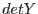
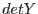

interface rawToInst
subroutine rawToInstScalar(rawX, rawY, detX, detY, thetaArcsec, phi)
integer(int16), intent(in) :: rawX,&
rawY
real(single), intent(out) :: detX,&
detY
real(double), intent(out) :: thetaArcsec,&
phi
end subroutine rawToInstScalar
subroutine rawToInstVector(rawX, rawY, detX, detY, thetaArcsec, phi)
integer(int16), intent(in) :: rawX(:),&
rawY(size(rawX))
real(single), intent(out) :: detX(size(rawX)),&
detY(size(rawX))
real(double), intent(out) :: thetaArcsec(size(rawX)),&
phi(size(rawX))
end subroutine rawToInstVector
subroutine rawToInstArray(rawX, rawY, detX, detY, thetaArcsec, phi)
integer(int16), intent(in) :: rawX(:,:),&
rawY(size(rawX,1),size(rawX,2))
real(single), intent(out) :: detX(size(rawX,1),size(rawX,2)),&
detY(size(rawX,1),size(rawX,2))
real(double), intent(out) :: thetaArcsec(size(rawX,1)&
,size(rawX,2)),&
phi(size(rawX,1),size(rawX,2))
end subroutine rawToInstArray
end interface
These subroutines convert from chip coordinates (ie, the RAWX/Y or
PIXCOORD1 system) to instrument-centric coordinates,
the TELCOORD system ( and
and  ), as well as
the DETX/Y (
), as well as
the DETX/Y ( and ) (the same, up to a scalar multiple,
as the CAMCOORD2 system) in unit of pixels, i.e., not mm as cal
supplies.
The cal
calls CAL_rawXY2mm and
CAL_camCoord2ToTelCoord are employed.
and ) (the same, up to a scalar multiple,
as the CAMCOORD2 system) in unit of pixels, i.e., not mm as cal
supplies.
The cal
calls CAL_rawXY2mm and
CAL_camCoord2ToTelCoord are employed.
NOTE this function requires the cal to have been set to the correct instrumentId, ccdChipId and (if instrumentId is EMOS1 or EMOS2) ccdNodeId before the call. This routine does not alter the randomization state of CAL. Hence if you want an identical result every time you call this subroutine,
call CAL_setState(randomize=.false.)should be set beforehand.
The subroutine rawToDet() is identical to this,
except it does not return
the TELCOORD system variables ( and
and  ).
).